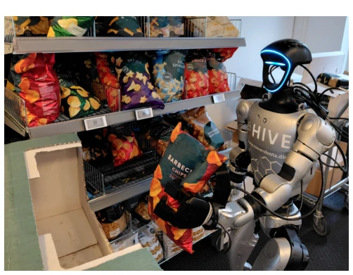
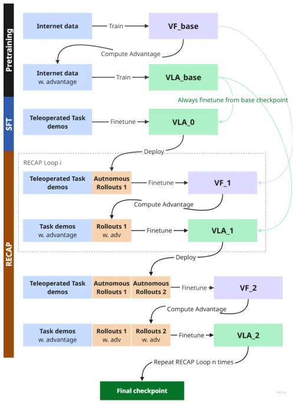
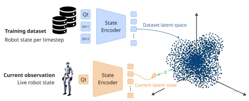
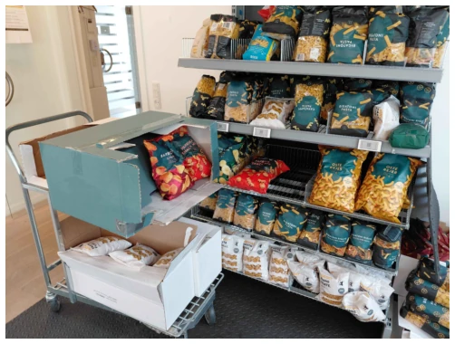
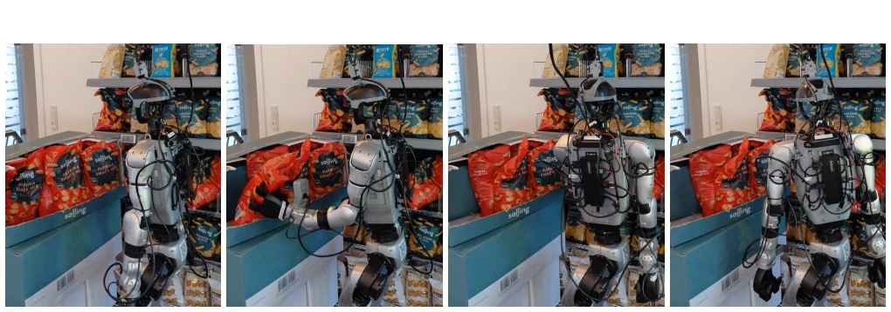

This paper avoids flashy architectures and honestly confronts the "lab-to-store" gap. The DEED framework demonstrates that data engineering is more critical than model fine-tuning; a single GPU can revive GR00T from a 0% success rate to 32%. Highlights include engineering details on frequency alignment, data cleaning, and visual highlighting, which are more valuable than purely benchmark chasing. However, there are significant drawbacks: experiments are limited to chip restocking with a small sample size (50 trials), and the second RECAP iteration resulted in performance degradation, exposing the risk of distribution drift in experience-driven learning. The conclusion is pragmatic: do not expect RL to infinitely self-evolve; mixed data is key. This reads more as an engineering guide to avoiding pitfalls than an algorithmic breakthrough.
Although VLA models such as OpenVLA [1] and GR00T [2] perform excellently in benchmarks, they still face significant challenges when deployed to real retail environments. Existing work mostly focuses on offline training, lacking robustness against execution errors, distribution shifts, and environmental changes [1]. Behavior cloning is constrained by demonstration data, where data inconsistency can rapidly lead to policy failure [4]. Additionally, offline policies cannot improve from their own experience and require continuous adaptation methods [5]. This paper aims to bridge this "lab-to-store" gap, achieving reliable deployment of VLA humanoid robots in real-world scenarios through systems engineering rather than architectural innovation.

Fig. 1: Hardware setup used for data collection and the exper- iments. The system consists of a Unitree G1-Edu equipped with two external wrist-mounted cameras and is evaluated on a supermarket restocking task.
The DEED framework is divided into three stages. First is Data Efficient Post-training (DE): establishing hierarchical alignment of camera, teleoperation, and inference frequencies (fr=fctrl≤fcam), improving data quality through data cleaning rules (e.g., retaining unexpected recovery, avoiding no-operation states), and introducing IA-VLA visual highlighting and Butterworth filtering to smooth actions. Second is Experience-Driven Learning (ED): drawing on RECAP [5], utilizing autonomous rollouts and human-corrected data, performing iterative fine-tuning via text advantage prefixes (Advantage=True/False) and visual-language value functions, restarting from a base checkpoint each time to prevent optimization drift. The value function predicts discrete reward distributions rather than scalars. Finally, distribution analysis tools: fitting GMM in the VLA latent space, calculating Mahalanobis distance to detect OOD states, providing monitoring signals for deployment.

Fig. 3: Overview of the Experience-Driven Policy Refine- ment pipeline. Starting from a policy trained via supervised fine-tuning (SFT) in the data-efficient stage of the DEED framework, RECAP is used to further refine the policy using data collected from autonomous rollouts. At each refinement iteration, both the value function and the VLA model are ini- tialized from their respective pre-trained checkpoints rather than from the previous RECAP stage.

Fig. 4: Overview of the state distribution analysis framework. Dataset states are projected into the VLA latent space using the state encoder and compared against the latent embedding of the current state observation.
Executed a supermarket chip restocking task on Unitree G1-Edu. The baseline is Naive SFT directly fine-tuning GR00T. DEED's DE stage increased the success rate from 0% to 32%, achieving full autonomous sequences for the first time. RECAP iteration 1 increased to 42%, but iteration 2 dropped to 22%. Ablation studies show the Eagle-3 value function performed best. It was found that the refined policy tends to stop after a single placement, suppressed due to low reset state value. Analysis tools confirmed distribution drift in the second iteration, indicating a need to balance demonstration and autonomous data. Metrics include success rate and consecutive bag placements.

Fig. 5: Deployment-oriented training setup for the restocking task. The model was trained using a realistic supermarket environment, including an actual shelf, trolley, and chip boxes, to expose the policy to the physical constraints and variability of the target deployment scenario while reducing the gap between training and real-world operation.

Fig. 6: Representative frames from an evaluation episode of the chips restocking task. The robot grasps a bag of chips, transports it to the target shelf by rotating its torso, places it on the shelf, and subsequently returns to its initial configuration.